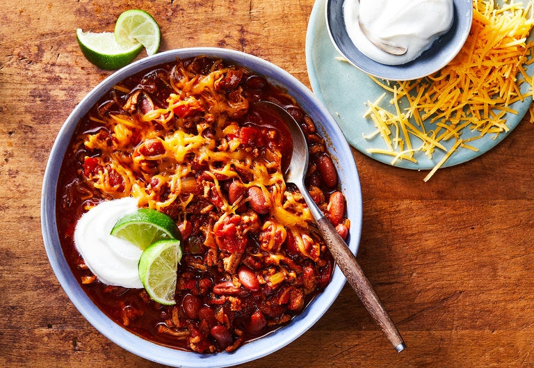

Turkey Chili

Description
A delicious, hearty, non-beef chili that soothes the soul once fall hits.
Yields 6 or more servings
Ingredients
- 1 tablespoon olive oil
- 2 lbs ground turkey, white and dark combined
- 2 cups coarsely chopped onions
- 2 tablespoons chopped garlic
- 1 large sweet red pepper, cored, deveined and coarsely chopped
- 1 cup chopped celery
- 1 jalapeno pepper, cored, deveined and finely chopped
- 1 tablespoon fresh oregano, chopped
- 2 bay leaves
- 3 tablespoons chili powder
- 2 teaspoons ground cumin
- 3 cups canned diced tomatoes
- 2 cups chicken broth, fresh or canned
- 2 15-ounce cans of red kidney beans, drained
- Salt and freshly ground pepper to taste
- 2 cups shredded cheddar cheese
- 1 cup sour cream (optional)
- Sliced lime for garnish (optional)
Steps
- Heat the oil over high heat in a large heavy pot and add the turkey meat. Cook until lightly browned, about 5 minutes, chopping down and stirring with the side of a heavy kitchen spoon to break up any lumps.
- Add the onions, garlic, sweet pepper, celery, jalapeno pepper, oregano, bay leaves, chili powder and cumin. Stir to blend well. Cook for 5 minutes.
- Add the tomatoes, chicken broth, salt and pepper. Bring to a boil, reduce heat and simmer, stirring occasionally, for 15 minutes.
- Add the drained beans and cook, stirring occasionally, for 10 minutes longer. Serve in bowls with cheddar cheese, and sour cream and lime wedges, if desired.